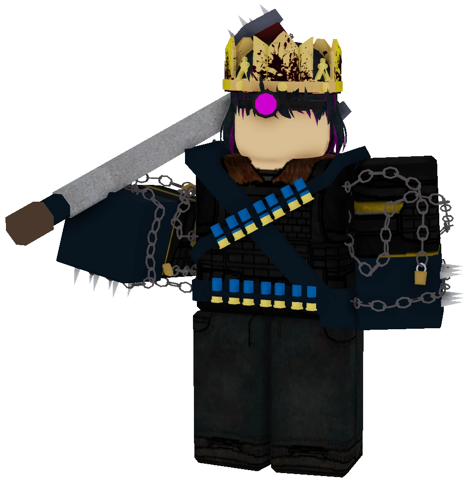

O mcx burguer é o nosso maior cliente, tendo utilizado nossa chapa por mais de 15 anos e a aprovando, o seu prato principal é o hamburguer m67, sendo muito saboroso e um clássico da casa.


A shirose's doces artesanais é a nossa maior empresa de doces, utilizando nossos fornos e micro-ondas, o seu doce mais famoso são os waffles com xarope de maple.
A yosef churrascaria é um restaurante classico no eden 227, usando nossas churrasqueiras, fogões e fornos, um de seus principais pratos é a picanha com pera caramelisada, sendo um dos melhores pratos de nossos clientes.